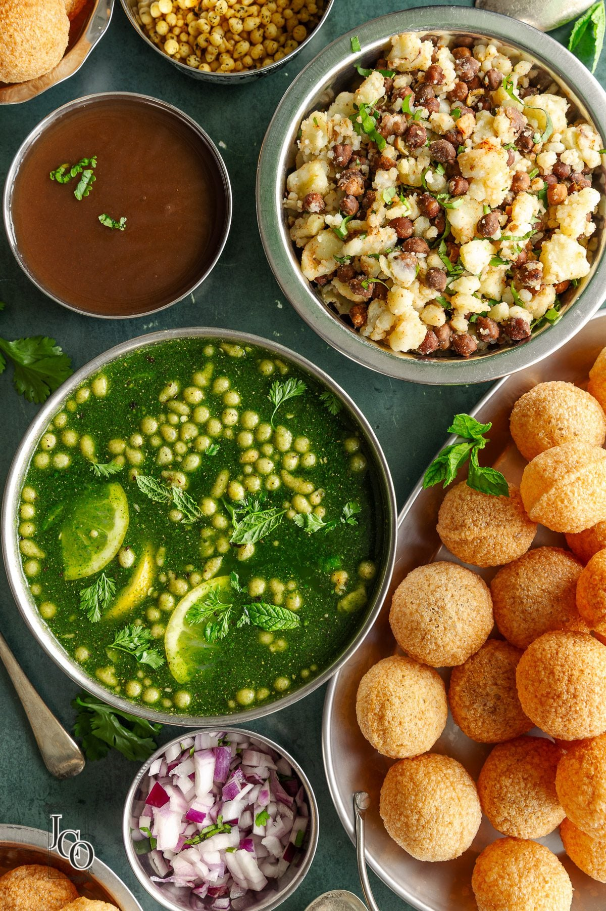

Pani Puri

Home
Description
Pani puri is a popular street food in India, consisting of hollow, crispy
puris filled with a mixture of flavored water (pani), tamarind chutney,
chili, chaat masala, potato, onion, and chickpeas.
Ingredients
- 1 cup Semolina (Sooji)
- 1/4 cup All-purpose flour (Maida)
- 1/4 tsp Baking soda
- Water (as needed)
- Oil (for deep frying)
- 1 cup Boiled potatoes (mashed)
- 1/2 cup Boiled chickpeas
- 1/2 cup Tamarind chutney
- 1/2 cup Mint-coriander chutney
- 1 tsp Chaat masala
- Salt to taste
- 1/2 tsp Red chili powder
- 1/2 tsp Roasted cumin powder
Steps
- In a bowl, mix semolina, all-purpose flour, and baking soda.
- Add water gradually and knead to form a smooth dough.
- Cover the dough and let it rest for 30 minutes.
- Roll out small portions of the dough into thin circles.
-
Heat oil in a deep frying pan and fry the puris until golden brown.
- Drain on paper towels and let them cool.
-
Prepare the filling by mixing boiled potatoes, chickpeas, chaat masala,
salt, red chili powder, and roasted cumin powder.
-
To serve, make a small hole in each puri, fill it with the
potato-chickpea mixture, add tamarind and mint-coriander chutneys, and
pour flavored water (pani) over it.